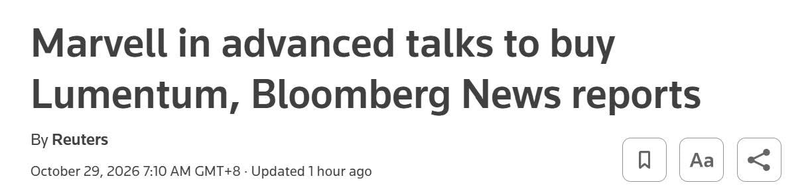

過去 26 小時只有 2 則貼文，其實是同一件事：Bloomberg 報導 Marvell 正在進行收購 Lumentum 的後期談判，一則是評論，另一則是 Reuters 標題截圖。重點是這筆交易仍是「傳聞」，雙方都還沒證實。
#6515 原文
Marvell 補足 InP 雷射光源，從賣 DSP 和光引擎升級成全包業者。博通多一個垂直整合對手，Nvidia 則有點借刀的味道，更加孤立博通
#6516 原文（無文字，只有圖片）

圖片是 Reuters 新聞標題截圖：「Marvell in advanced talks to buy Lumentum, Bloomberg News reports」，發布時間 2026/10/29 上午 7:10（GMT+8）。
講解
消息本身：Bloomberg 引述不具名知情人士，說 Marvell 正和光通訊元件商 Lumentum 進行後期收購談判，最快下週宣布；Reuters 轉載時表示兩家公司都沒有回應。報導沒有給出價格、現金或換股比例，也還沒有最終協議。Lumentum 市值約 830 億美元，Marvell 約 2,200 億美元，所以這會是 AI 基礎建設領域最大型的併購之一。消息出來後，Lumentum 盤後漲約 9%，Marvell 盤後跌超過 8%；10/29 正式交易日 Marvell 收 218.34 美元，跌約 13%，不過同一天科技股因 Alphabet 財報也普遍走弱，跌幅不全是這筆交易造成的。
InP 雷射是什麼、為什麼重要：資料中心的光模組要把電訊號轉成光訊號，需要三大塊：DSP（數位訊號處理晶片，負責調變與校正）、光引擎／矽光子（把電路和光路整合在一起），以及雷射光源。高速 EML 雷射與 CW 雷射多半用磷化銦（InP）材料做，產能集中在少數業者，Lumentum 是其中的主要供應商之一，這幾年一直是 800G／1.6T 光模組的瓶頸。Marvell 原本強在 DSP 和光學元件，去年又宣布用 32.5 億美元收購矽光子公司 Celestial AI。如果再買下 Lumentum，就把雷射也納入版圖，這就是貼文說的「全包」。韓國媒體也提到 Marvell 本來就向 Lumentum 買雷射元件，收購可以簡化供應鏈。
博通與 Nvidia 的角度：博通本身就有 DSP、交換器晶片、CPO（共同封裝光學）與自家雷射，原本是少數垂直整合的業者，所以貼文說它「多一個垂直整合對手」。「Nvidia 借刀」是股癌的推論，不是報導內容。可以佐證的背景是：Nvidia 今年 3 月宣布投資 Lumentum 20 億美元，並簽下多年期、非獨家的採購與產能協議（同時也涵蓋 Coherent）。換句話說，Nvidia 已經是 Lumentum 的大股東和大客戶，Marvell 若成為 Lumentum 的母公司，Nvidia 與 Marvell 的利益會更加綁在一起；但這是不是 Nvidia 刻意孤立博通，目前沒有來源可以證實。
需要注意：貼文寫「Marvell 補足」，語氣像交易已經完成，但目前只是單一匿名來源的「後期談判」，隨時可能破局或改條件。Bernstein 分析師也指出，Marvell 最近一季帳上現金約 39 億美元，這麼大的交易很可能需要額外融資或大量發新股（稀釋股東權益），整合風險也不小，這也是 Marvell 股價反而大跌的原因之一。另外，Lumentum 的估值已經很高（有報導換算約 28 倍營收），收購價格會是後續的關鍵。